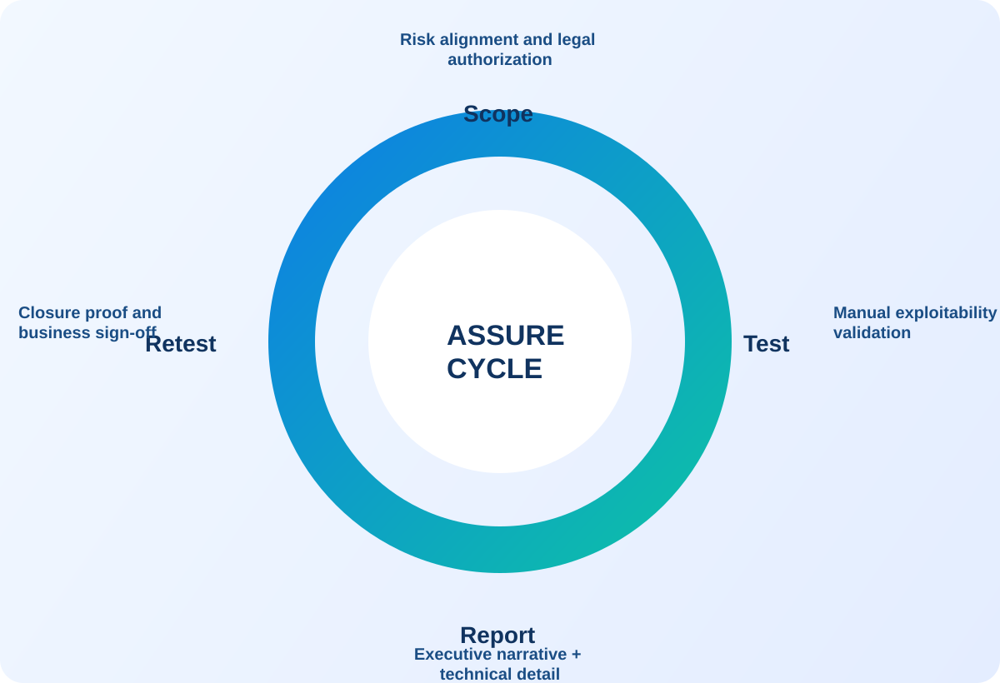

Response SLA
Leadership reply within 24 hoursDelivery Regions
USA, Spain, India, Ecuador, and global remoteEngagement Control
NDA-first, written authorization requiredControl Alignment
Mapped to SOC 2, ISO 27001, PCI DSS, HIPAAServices
Enterprise cybersecurity services designed for resilience at scale.
Integrated offensive security, validation, and remediation programs.
Service Motion Lab
Visual modules that communicate service value in seconds.
Each block presents a different program signal so users can scan process stages quickly.
Dynamic service cells represent parallel validation tracks across application, API, and cloud layers.
Risk escalation pulse board highlights exploitability scoring and response urgency.
Step-based remediation route maps findings from discovery to verified closure.
Blueprint Explainer
Service blueprint from scoped kickoff to verified closure.
Design
Risk scope aligned and approved
Execute
Manual adversarial validation
Translate
Leadership narrative delivered
Verify
Retest evidence confirmed
Security architecture coverage by layer
Designed so leadership can govern risk while engineering teams close findings efficiently.
A
Application Security Layer
Manual web and mobile validation for exploitable logic, authentication, and access-control failures.
- Business logic and privilege chain analysis
- Secure SDLC regression recommendations
- Executive impact framing
B
API and Integration Layer
API trust-boundary testing across internal, partner, and customer-facing interfaces.
- Object authorization and token lifecycle validation
- Rate-limit and abuse-case simulation
- Technical remediation playbooks
C
Cloud and Identity Layer
IAM exposure mapping, privilege-escalation testing, and cloud attack-path simulation.
- Role trust analysis for AWS/Azure/GCP
- Segmentation and lateral movement testing
- Control effectiveness validation
D
Adversary Simulation Layer
Red team and assumed-breach engagements for SOC and response capability validation.
- Threat-informed scenario execution
- Detection coverage and response gap review
- Leadership debrief and improvement roadmap
Performance visuals leaders and engineers can act on immediately.
Visual metrics keep remediation programs measurable, auditable, and operationally clear.
Risk Heat Signatures
Identity
Cloud
Apps
Threat intensity by attack surface to guide remediation sequencing.
Closure Velocity Funnel
Findings confirmed
Owners assigned
Fixes deployed
Retests passed
Operational governance view for leadership reporting and remediation planning.
Assurance Alignment
- SOC 2Trust service evidence mapping
- ISO 27001Control objective correlation
- PCI DSSCardholder data-flow validation
- NIST CSFProgram maturity narrative
Engagement lifecycle with clear decision checkpoints
Scoping workshop
Business objectives, critical assets, and risk thresholds aligned with stakeholders.
Threat-led execution
Manual offensive validation with rapid escalation channels for critical findings.
Multi-audience reporting
Executive summaries, technical detail, and owner-mapped remediation plans.
Remediation validation
Retest workflow with closure evidence and posture update.
Rapid Risk Sprint
Targeted validation for launches, acquisitions, and urgent risk windows.
Quarterly Validation Program
Recurring exposure checks for continuously changing environments.
Managed Security Validation
Long-term partnership for strategic and operational security assurance.
Executive Cyber Advisory
Risk governance support for CISO leadership, board, and audit committees.
Deliverables clients can use immediately after delivery.
No ambiguity. Every program includes technical depth plus leadership-ready outcomes.
Executive Package
- Business impact summary by risk tier
- Board-ready narrative and decision options
- Program KPI dashboard and closure forecast
Technical Package
- Reproducible findings and exploit path evidence
- Root-cause analysis and secure implementation guidance
- Severity and priority model with ownership mapping
Assurance Package
- Retest validation results and closure memo
- Compliance control mapping references
- Stakeholder debrief and next-cycle roadmap
Typical timeline with clear stakeholder touchpoints.
NDA, authorization, scope boundary confirmation
Manual offensive execution + critical escalation channel
Leadership brief + technical walkthrough workshops
Remediation support and retest closure reporting
Commercial Packages
Clear package tiers with enterprise-ready outcomes.
Published as starting-price bands. Final quotes follow scoped authorization and environment review.
Attack Surface Sprint
Starting at $12K-$25K for targeted web, API, or cloud exposure validation.
- Manual testing on one prioritized surface
- Exploit-backed findings and remediation plan
- Critical/high retest closure cycle
Core Assurance Program
Starting at $30K-$65K for multi-surface risk validation and owner-mapped closure.
- Web + API + cloud baseline assurance
- Executive and technical reporting package
- Remediation workshop with retest validation
Enterprise Offensive Validation
Starting at $75K-$180K+ for regulated and large-scale programs.
- Application, API, cloud, and IAM coverage
- Threat-led simulation and leadership briefings
- Governance tracker and closure memo
Recurring Revenue Track
Continuous validation retainers designed for predictable risk reduction.
Retainer Starter
$6K-$12K/month for focused monthly validation and leadership reporting.
- One monthly validation sprint
- Risk register update and next-step plan
- Leadership summary with closure priorities
Retainer Growth
$15K-$30K/month for dual-track testing and remediation governance.
- Two monthly validation tracks
- Owner-tracked remediation follow-through
- Monthly executive review + quarterly strategy
Retainer Enterprise
$35K-$80K+/month for multi-team programs and continuous assurance.
- Ongoing multi-surface attack-path validation
- Priority escalation and governance KPI dashboard
- Executive and board-ready monthly narrative
Strategic add-ons for faster expansion.
vCISO Advisory
Board-facing governance support, policy oversight, and stakeholder alignment.
Typical range: $8K-$25K/month
Compliance Readiness
SOC 2 and ISO 27001 control-gap mapping with evidence workflow support.
Typical range: $20K-$70K
Incident Readiness
Tabletop exercises, response playbooks, and priority response-retainer design.
Typical range: $10K-$40K project
Interactive selector to recommend your best-fit program.
Choose your priorities and get a recommended engagement model instantly.
Service Explain Studio
Unique explainers for each engagement stage.
Executive Risk Story
Short explainer for leadership teams on posture, priorities, and assurance outcomes.
Technical Delivery Flow
Assessment-to-remediation workflow overview for engineering and platform teams.

Assurance Flywheel
Enterprise lifecycle from authorization through validated remediation closure.